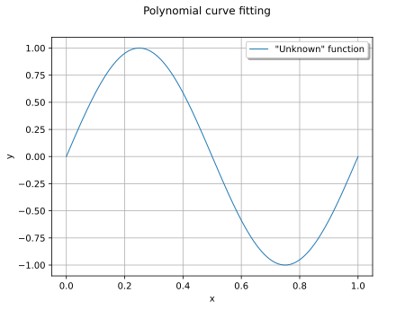
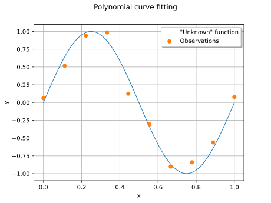
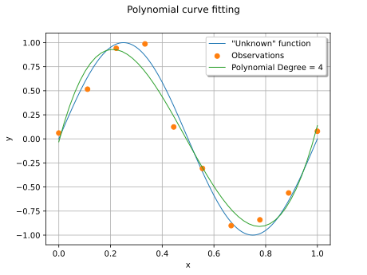
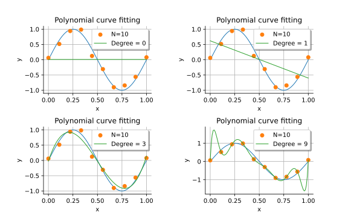
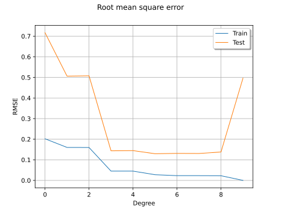
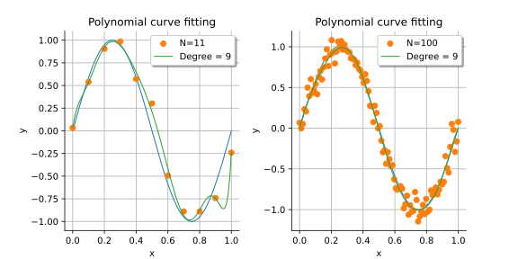

Note
Go to the end to download the full example code.
Over-fitting and model selection¶
Introduction¶
In this notebook, we present the problem of over-fitting a model to data. We consider noisy observations of the sine function. We estimate the coefficients of the univariate polynomial based on linear least squares and show that, when the degree of the polynomial becomes too large, the overall prediction quality decreases.
This shows why and how model selection can come into play in order to select the degree of the polynomial: there is a trade-off between fitting the data and preserving the quality of future predictions. In this example, we use cross validation as a model selection method.
References¶
Bishop Christopher M., 1995, Neural networks for pattern recognition. Figure 1.4, page 7
Compute the data¶
In this section, we generate noisy observations from the sine function.
import openturns as ot
from matplotlib import pyplot as plt
import openturns.viewer as otv
We define the function that we are going to approximate.
g = ot.SymbolicFunction(["x"], ["sin(2*pi_*x)"])

This seems a smooth function to approximate with polynomials.
def linearSample(xmin, xmax, npoints):
"""Returns a sample created from a regular grid
from xmin to xmax with npoints points."""
step = (xmax - xmin) / (npoints - 1)
rg = ot.RegularGrid(xmin, step, npoints)
vertices = rg.getVertices()
return vertices
We consider 10 observation points in the interval [0,1].
n_train = 10
x_train = linearSample(0, 1, n_train)
Assume that the observations are noisy and that the noise follows a Normal distribution with zero mean and small standard deviation.
noise = ot.Normal(0, 0.1)
noiseSample = noise.getSample(n_train)
The following computes the observation as the sum of the function value and of the noise. The couple (x_train , y_train) is the training set: it is used to compute the coefficients of the polynomial model.
y_train = g(x_train) + noiseSample
graph = ot.Graph("Polynomial curve fitting", "x", "y")
graph.setLegendPosition("upper right")
# The "unknown" function
curve = g.draw(0, 1)
curve.setLegends(['"Unknown" function'])
graph.add(curve)
# Training set
cloud = ot.Cloud(x_train, y_train)
cloud.setPointStyle("circle")
cloud.setLegend("Observations")
graph.add(cloud)
view = otv.View(graph)

Compute the coefficients of the polynomial decomposition¶
Let ![\vect{y} \in \Rset^n]() be a vector of observations.
The polynomial model is
be a vector of observations.
The polynomial model is
![P(x) = \beta_0 + \beta_1 x + ... + \beta_p x^p,]()
for any ![x \in \Rset]() , where
, where ![p]() is the polynomial degree and
is the polynomial degree and ![\vect{\beta} \in \Rset^{p+1}]() is the vector of the coefficients of the model.
Let
is the vector of the coefficients of the model.
Let ![\sampleSize]() be the training sample size and let
be the training sample size and let ![x_1,...,x_\sampleSize \in \Rset]() be the abscissas of the training set.
The design matrix
be the abscissas of the training set.
The design matrix ![\mat{X} \in \Rset^{n \times (p+1)}]() is
is
![x_{i,j} = x^j_i,]()
for ![i=1,...,n]() and
and ![j=0,...,p]() .
The least squares solution is:
.
The least squares solution is:
![\beta^\star = \argmin_{\vect{\beta} \in \Rset^{p+1}} \| \mat{X} \vect{\beta} - \vect{y}\|_2^2.]()
In order to approximate the function with polynomials up to degree 4,
we create a list of strings containing the associated monomials.
We do not include a constant in the polynomial basis, as this constant term
is automatically included in the model by the LinearLeastSquares class.
We perform the loop from 1 up to total_degree (but the range function takes total_degree + 1 as its second input argument).
total_degree = 4
polynomialCollection = ["x^%d" % (degree) for degree in range(1, total_degree + 1)]
polynomialCollection
['x^1', 'x^2', 'x^3', 'x^4']
Given the list of strings, we create a symbolic function which computes the values of the monomials.
basis = ot.SymbolicFunction(["x"], polynomialCollection)
basis
responseSurface = myLeastSquares.getResult().getMetaModel()
The test set¶
The couple (x_test , y_test) is the test set: it is used to assess the quality of the polynomial model with points that were not used for training.
n_test = 50
x_test = linearSample(0, 1, n_test)
y_test = responseSurface(basis(x_test))
graph = ot.Graph("Polynomial curve fitting", "x", "y")
graph.setLegendPosition("upper right")
# The "unknown" function
curve = g.draw(0, 1)
curve.setLegends(['"Unknown" function'])
graph.add(curve)
# Training set
cloud = ot.Cloud(x_train, y_train)
cloud.setPointStyle("circle")
cloud.setLegend("Observations")
graph.add(cloud)
# Predictions
curve = ot.Curve(x_test, y_test)
curve.setLegend("Polynomial Degree = %d" % (total_degree))
graph.add(curve)
view = otv.View(graph)

Compute the residuals¶
For each observation in the training set, the residual is the vertical distance between the model and the observation.
sphinx_gallery_thumbnail_number = 4
graph = ot.Graph(
"Least squares minimizes the sum of the squares of the vertical bars",
"x",
"y",
)
graph.setLegendPosition("upper right")
residualsColor = ot.Drawable.BuildDefaultPalette(3)[2]
# Predictions
curve = ot.Curve(x_test, y_test)
curve.setLegend("Polynomial Degree = %d" % (total_degree))
graph.add(curve)
# Training set observations
cloud = ot.Cloud(x_train, y_train)
cloud.setPointStyle("circle")
cloud.setLegend("Observations")
graph.add(cloud)
# Errors
ypredicted_train = responseSurface(basis(x_train))
for i in range(n_train):
curve = ot.Curve([x_train[i], x_train[i]], [y_train[i], ypredicted_train[i]])
curve.setColor(residualsColor)
curve.setLineWidth(2)
if i == 0:
curve.setLegend("Residual")
graph.add(curve)
view = otv.View(graph)

The least squares method minimizes the sum of the squared errors i.e. the sum of the squares of the lengths of the vertical segments.
We gather the previous computation in two different functions. The myPolynomialDataFitting function computes the least squares solution and myPolynomialCurveFittingGraph plots the results.
def myPolynomialDataFitting(total_degree, x_train, y_train):
"""Computes the polynomial curve fitting
with given total degree.
This is for learning purposes only: please consider a serious metamodel
for real applications, e.g. polynomial chaos or kriging."""
polynomialCollection = ["x^%d" % (degree) for degree in range(1, total_degree + 1)]
basis = ot.SymbolicFunction(["x"], polynomialCollection)
designMatrix = basis(x_train)
myLeastSquares = ot.LinearLeastSquares(designMatrix, y_train)
myLeastSquares.run()
responseSurface = myLeastSquares.getResult().getMetaModel()
return responseSurface, basis
def myPolynomialCurveFittingGraph(total_degree, x_train, y_train):
"""Returns the graphics for a polynomial curve fitting
with given total degree"""
responseSurface, basis = myPolynomialDataFitting(total_degree, x_train, y_train)
# Graphics
n_test = 100
x_test = linearSample(0, 1, n_test)
ypredicted_test = responseSurface(basis(x_test))
# Graphics
graph = ot.Graph("Polynomial curve fitting", "x", "y")
graph.setLegendPosition("upper right")
# The "unknown" function
curve = g.draw(0, 1)
graph.add(curve)
# Training set
cloud = ot.Cloud(x_train, y_train)
cloud.setPointStyle("circle")
cloud.setLegend("N=%d" % (x_train.getSize()))
graph.add(cloud)
# Predictions
curve = ot.Curve(x_test, ypredicted_test)
curve.setLegend("Degree = %d" % (total_degree))
graph.add(curve)
return graph
In order to see the effect of the polynomial degree, we compare the polynomial fit with degrees equal to 0 (constant), 1 (linear), 3 (cubic) and 9.
grid = ot.GridLayout(2, 2)
grid.setGraph(0, 0, myPolynomialCurveFittingGraph(0, x_train, y_train))
grid.setGraph(0, 1, myPolynomialCurveFittingGraph(1, x_train, y_train))
grid.setGraph(1, 0, myPolynomialCurveFittingGraph(3, x_train, y_train))
grid.setGraph(1, 1, myPolynomialCurveFittingGraph(9, x_train, y_train))
view = otv.View(grid, figure_kw={"figsize": (8.0, 5.0)})
plt.subplots_adjust(hspace=0.5, wspace=0.5)

When the polynomial degree is low, the fit is satisfying. The polynomial is close to the observations, although there is still some residual error.
However, when the polynomial degree is high, it produces large oscillations which significantly deviate from the true function. This is overfitting. This is a pity, given the fact that the polynomial exactly interpolates the observations: the residuals are zeroed.
If the locations of the x abscissas could be changed, then the oscillations could be made smaller. This is the method used in Gaussian quadrature, where the nodes of interpolation are made closer on the left and right bounds. In our situation, we make the asssumption that these abscissas cannot be changed: the most obvious choice is to limit the degree of the polynomial. Another possibility is to include a regularization into the least squares solution.
Root mean squared error¶
In order to assess the quality of the polynomial fit, we create a second dataset, the test set and compare the value of the polynomial with the test observations.
sqrt = ot.SymbolicFunction(["x"], ["sqrt(x)"])
In order to see how close the model is to the observations, we compute the root mean square error.
First, we create a degree 4 polynomial which fits the data.
total_degree = 4
responseSurface, basis = myPolynomialDataFitting(total_degree, x_train, y_train)
Then we create a test set, with the same method as before.
def createDataset(n):
x = linearSample(0, 1, n)
noiseSample = noise.getSample(n)
y = g(x) + noiseSample
return x, y
On this test set, we evaluate the polynomial.
The vector of residuals is the vector of the differences between the observations and the predictions.
The normSquare method computes the square of the Euclidian norm (i.e., the 2-norm). We divide this by the test sample size (so as to compare the error for different sample sizes) and compute the square root of the result (so that the result has the same unit as y ).
RMSE = sqrt([residuals.normSquare() / n_test])[0]
RMSE
0.1446476675291087
The following function gathers the RMSE computation to make the experiment easier.
def computeRMSE(responseSurface, basis, x, y):
ypredicted = responseSurface(basis(x))
residuals = y.asPoint() - ypredicted.asPoint()
RMSE = sqrt([residuals.normSquare() / n_test])[0]
return RMSE
maximum_degree = 10
RMSE_train = ot.Sample(maximum_degree, 1)
RMSE_test = ot.Sample(maximum_degree, 1)
for total_degree in range(maximum_degree):
responseSurface, basis = myPolynomialDataFitting(total_degree, x_train, y_train)
RMSE_train[total_degree, 0] = computeRMSE(responseSurface, basis, x_train, y_train)
RMSE_test[total_degree, 0] = computeRMSE(responseSurface, basis, x_test, y_test)
degreeSample = ot.Sample([[i] for i in range(maximum_degree)])
graph = ot.Graph("Root mean square error", "Degree", "RMSE")
graph.setLegendPosition("upper right")
# Train
cloud = ot.Curve(degreeSample, RMSE_train)
cloud.setLegend("Train")
cloud.setPointStyle("circle")
graph.add(cloud)
# Test
cloud = ot.Curve(degreeSample, RMSE_test)
cloud.setLegend("Test")
cloud.setPointStyle("circle")
graph.add(cloud)
view = otv.View(graph)

We see that the RMSE on the train set continuously decreases, reaching zero when the polynomial degree is so that the number of coefficients is equal to the train dataset sample size. In this extreme situation, the least squares solution is equivalent to solving a linear system of equations: this leads to a zero residual.
On the test set however, the RMSE decreases, reaches a flat region, then increases dramatically when the degree is equal to 9. Hence, limiting the polynomial degree limits overfitting.
Increasing the training set¶
We wonder what happens when the training dataset size is increased.
total_degree = 9
grid = ot.GridLayout(1, 2)
n_train = 11
x_train, y_train = createDataset(n_train)
grid.setGraph(0, 0, myPolynomialCurveFittingGraph(total_degree, x_train, y_train))
n_train = 100
x_train, y_train = createDataset(n_train)
grid.setGraph(0, 1, myPolynomialCurveFittingGraph(total_degree, x_train, y_train))
view = otv.View(grid, figure_kw={"figsize": (8.0, 4.0)})
plt.subplots_adjust(wspace=0.3)

We see that the polynomial oscillates with a dataset with size 11, but does not with the larger dataset: increasing the training dataset mitigates the oscillations.